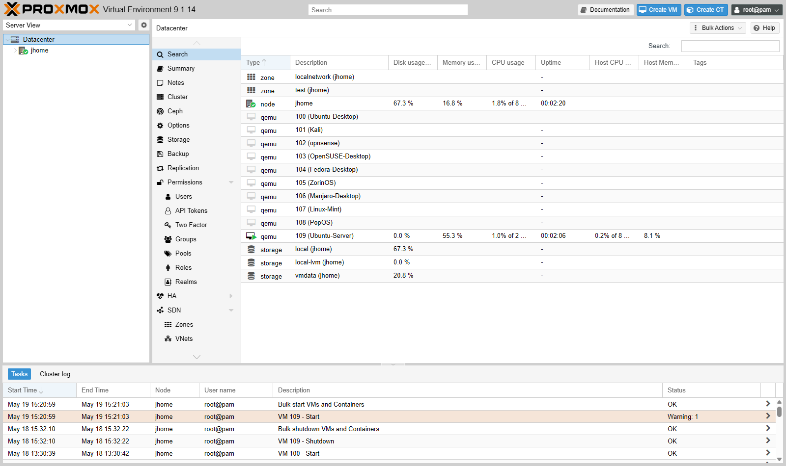
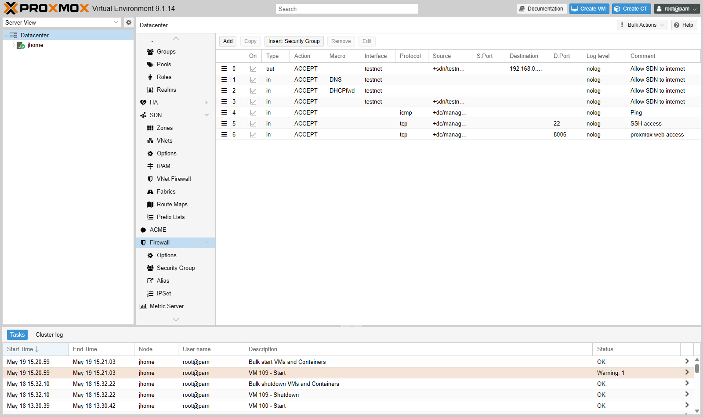
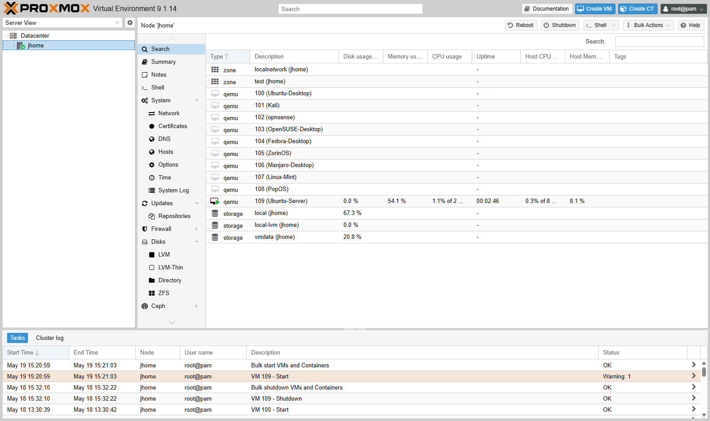

Proxmox Virtualization & Software-Defined Networking
Primary Focus: Bare-Metal Hypervisor Administration, SDN Segmentation, Docker Service Stack, VFIO GPU Passthrough
Source Repository: github.com/jkosber/JHomelab
1. Objective
To build and run a Proxmox homelab on an Alienware 15 R3. The primary architectural goals were:
- Provide complete network isolation between the home LAN and experimental testing virtual machines using Software-Defined Networking (SDN).
- Implement predictable IP Address Management (IPAM) and datacenter-level firewall access control lists (ACLs).
- Host always-on core infrastructure services (Docker/Portainer, Homepage dashboard, Uptime Kuma) with minimal resource overhead.
- Configure hardware PCI passthrough (VFIO / IOMMU) to dedicate a discrete GPU to specific virtual workloads.
2. Architecture & Topology
The hypervisor runs on an Alienware 15 R3 platform running Proxmox VE 9.1.0 (Kernel 6.17).
flowchart TD
subgraph PhysicalPlatform ["Bare-Metal Physical Host (jhome) - Proxmox VE 9.1"]
CPU["Intel Core i7-7700HQ (4C / 8T)"]
RAM["16 GB DDR4 RAM (Over-provisioned across VM pool)"]
StorageSSD["120 GB SSD (local, local-lvm / OS & ISOs)"]
StorageHDD["1 TB HDD (vmdata / VM Virtual Disks)"]
GPU["NVIDIA GTX 1070 Mobile (Bound to vfio-pci)"]
end
subgraph NetZones ["Proxmox SDN Network Zones"]
subgraph HomeZone ["Home LAN Zone (vmbr0) - 192.168.x.x/24"]
VM109["VM 109: Ubuntu Server 24.04 (Docker Host)
IP: 192.168.x.x
• Portainer (9443)
• Homepage Dashboard (3000)
• Uptime Kuma (3001)"]
end
subgraph LabZone ["Lab SDN Zone (testnet VNet) - 10.10.100.0/24"]
PVE_IPAM["Proxmox Dynamic IPAM (10.10.100.1 Gateway)"]
VM100["VM 100: Ubuntu Desktop (10.10.100.100)"]
VM101["VM 101: Kali Linux (10.10.100.101)"]
VM102["VM 102: OPNsense Gateway (10.10.100.102)"]
VM103_108["VMs 103-108: Multi-Distro Range
(Fedora, openSUSE, Arch/Manjaro, Pop!_OS, Mint)"]
end
end
PhysicalPlatform --> NetZones3. Technologies & Specifications
| Component | Technical Specification | Operational Role |
|---|---|---|
| Hypervisor | Proxmox VE 9.1.0 (Linux Kernel 6.17) | Bare-metal type-1 hypervisor |
| Host CPU & RAM | Intel i7-7700HQ (4C / 8T), 16 GB DDR4 | Core compute with dynamic RAM commitment |
| Storage Architecture | Tier 1: 120 GB SSD (local, local-lvm)Tier 2: 1 TB HDD ( vmdata) |
Tier 1 for PVE root OS and ISOs; Tier 2 for VM .qcow2 virtual disks |
| Discrete GPU | NVIDIA GeForce GTX 1070 Mobile | Bound to vfio-pci driver via IOMMU isolation |
| SDN Framework | Proxmox SDN (Simple Zone + EVPN capable) | Virtual Network (testnet) with managed IPAM |
| Container Engine | Docker Engine + Portainer on VM 109 | Microservice container host |
4. Implementation & Configuration
A. Software-Defined Networking & Predictable Addressing
To isolate experimental operating systems (including penetration testing distros like Kali) from production home network traffic, a dedicated Proxmox SDN zone was created:
- Home Network (
vmbr0):192.168.x.x/24— Management IP on management subnet (192.168.x.x:8006) and always-on infrastructure (192.168.x.x). - Lab SDN (
testnet):10.10.100.0/24— Fully isolated virtual switch managed by Proxmox IPAM with local DHCP serving the10.10.100.1gateway. - Predictable Addressing Rule: IPs follow
10.10.100.<VMID>(VM 101 →10.10.100.101, VM 105 →10.10.100.105). This simplifies correlation across firewall logs, packet captures, and hypervisor inventories.
B. Datacenter Firewall Rule Base
A strict default-drop policy was applied at the Proxmox Datacenter level with the following rules:
- Management ACL: Allows ICMP Ping, SSH (Port 22), and Proxmox Web UI (Port 8006) exclusively from authorized management subnets.
- SDN Egress: Permits outbound DNS (UDP/TCP 53) and DHCP (UDP 67/68) within the
testnetzone. - Internet Egress: Permits outbound HTTP/HTTPS for package repository updates while blocking any unsolicited inter-zone inbound connections to the home LAN.
+-----------------------------------------------------------------------------------+
| Proxmox Datacenter Firewall Rules |
+-----+--------+---------------+------------------+-------+----------+--------------+
| Dir | Action | Source | Destination | Proto | DPort | Comment |
+-----+--------+---------------+------------------+-------+----------+--------------+
| IN | ACCEPT | MgmtSubnet | 192.168.x.x | tcp | 8006, 22 | PVE Web/SSH |
| IN | ACCEPT | MgmtSubnet | 192.168.x.x | icmp | - | Mgmt Ping |
| OUT | ACCEPT | 10.10.100.0/24| 10.10.100.1 | udp | 53, 67 | In-Zone DNS |
| OUT | ACCEPT | 10.10.100.0/24| 0.0.0.0/0 | tcp | 80, 443 | HTTP/S Egress|
+-----+--------+---------------+------------------+-------+----------+--------------+
C. Container Service Stack on VM 109
VM 109 (Ubuntu-Server @ 192.168.x.x) is configured as the sole auto-booting guest, running lightweight Docker containers managed via Portainer:
- Homepage (Port 3000): Dashboard for internal lab links.
- Uptime Kuma (Port 3001): Active HTTP/ICMP health checks monitoring hypervisor and VM uptime.
- Portainer (Port 9443): Web interface for container image lifecycle and volume management.
5. Validation & Evidence
The lab environment was validated through live operational status:

Proxmox Datacenter inventory displaying the active nodejhome, storage pools, and VMs 100 through 109.

Active Datacenter-level firewall rulebase enforcing access control and egress permissions.
Nodejhome hardware summary (CPU, memory, and storage configuration).
6. Troubleshooting & Engineering Challenges
??? example "Issue: IOMMU Grouping Conflicts on Mobile GPU" * Problem: When attempting to pass through the NVIDIA GTX 1070 Mobile to a guest VM, Proxmox reported that the GPU shared an IOMMU group with the PCIe root port and onboard audio controller, preventing clean PCI attachment. * Root Cause: Laptop motherboard PCIe root topologies frequently bundle multi-function PCIe devices into unified IOMMU groups. * Remediation: Added pcie_acs_override=downstream,multifunction to /etc/default/grub, reloaded GRUB (update-grub), and verified discrete IOMMU grouping via pvesh get /nodes/jhome/hardware/pci. The GPU was then successfully bound to the vfio-pci stub driver.
??? example "Issue: Memory Over-Commitment Strategy" * Problem: Allocating maximum required RAM to all 10 VMs simultaneously would require ~48 GB, exceeding the physical 16 GB capacity. * Resolution: Only VM 109 (2 GB) is set to auto-boot. Desktop-heavy VMs (Fedora, Kali, Zorin) are powered on individually on-demand, keeping active RAM within safe limits (< 80%).